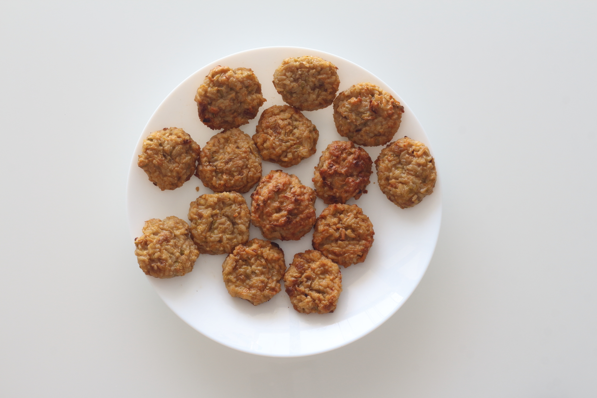

Zucchini Fritters

Ingredients
- Zucchini — 400 g (1 medium; about 2 cups grated)
- Onion — 1 large or 2 small
- Vegetable oil — 35 ml (2 tablespoons)
- Cooked rice — 150 g (a little over half a cup)
- Egg — 1 piece
- Flour — 1 and a half tablespoons
- Salt — a small pinch
- Spices — to taste (for example, ground black pepper — 1 gram or 1 level teaspoon)
Directions
- Grate the zucchini on a coarse grater. Sprinkle it with salt and let it sit for 5-10 minutes.
- Finely chop the onion and sauté it in vegetable oil until soft and translucent.
- Squeeze the zucchini well to remove the liquid. Then fold it together with the cooled cooked rice
(boiled in lightly salted water), the sautéed onion, egg, flour, a pinch of salt, and any spices you enjoy.
Mix until the mixture becomes smooth and cohesive.
- Shape small patties with slightly moistened hands.
- Bake at 180-190°C for 25-30 minutes, until lightly golden. For a deeper color, switch on the top heat
for the last 3-5 minutes.